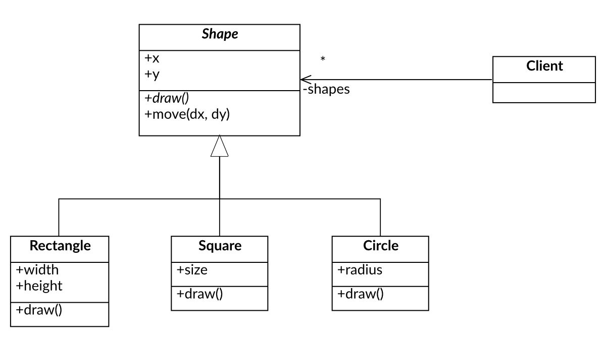
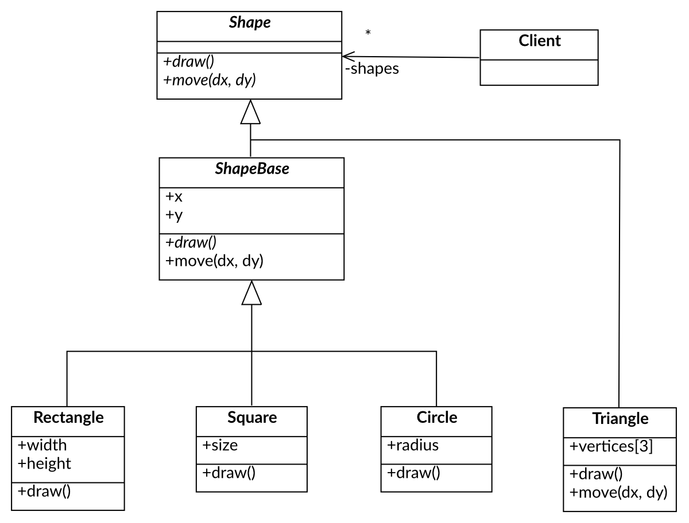
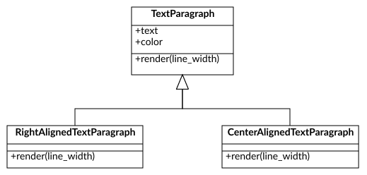
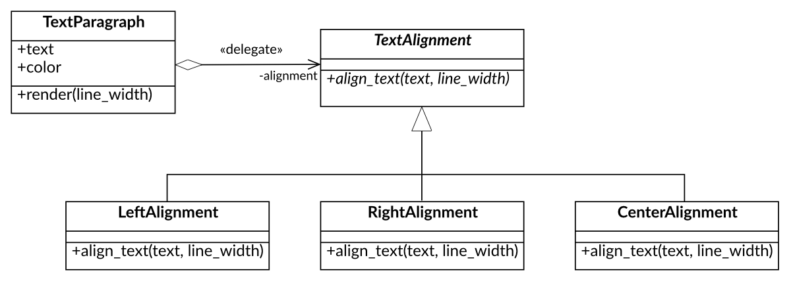

Foundations of Object-Oriented Programming#
Four tenets of object-oriented programming#
Object-oriented programming (OOP) is a programming paradigm that uses “objects” to design applications and computer programs.
It utilizes several techniques to design and develop software. The four major principles of object-oriented programming are:
Abstraction
Abstraction is the concept of hiding the complex implementation details and showing only the necessary features of the object. It helps to reduce programming complexity and effort.
Encapsulation
Encapsulation (aka Information Hiding) is the process of bundling the data (variables) and the methods (functions) that operate on the data into a single unit called a class. All internal details of the class implementation are hidden from the outside world, and only the necessary interface that allows to operate on an object is exposed to the user.
Polymorphism
It allows to perform a single action in different ways. In other words, polymorphism allows to define one interface and have multiple implementations. Objects that have the same interface can be used interchangeably.
Code Reusability: Composition & Inheritance
Composition and inheritance are two ways to achieve code reusability in object-oriented programming.
Composition is a “has-a” relationship between two classes. It allows creating complex types by combining objects of other types.
Inheritance is an “is-a” relationship between two classes. It allows creating a new class that inherits attributes and methods from an existing class.
Object - Interface - Class#
Object#
An object is a real-world entity that has a state and behavior. It can be a physical entity or a conceptual entity. An object has three main characteristics:
State: It represents the data (attributes) of an object.
Behavior: It represents the methods (functions) that operate on the object’s state.
Identity: It gives a unique name to an object and enables one object to interact with another object.
In object oriented software objects communicate with each other using methods.
Interface#
An interface is a public contract that defines the methods that a class must implement. It specifies what a class must do but not how it does it. Interfaces are used to define the behavior of an object.
Interface is separated from the objects implementation. Many objects that have the same interface can vary in their implementation.
Class#
Class defines the implementation for an object. It is a blueprint for creating objects. It defines the attributes and methods that an object will have.
Class allows to instantiate objects. An object is an instance of a class.
Abstract Class#
An abstract class is a class that cannot be instantiated.
It is used to define a common interface for all the subclasses. It allows to define abstract methods that must be implemented by the subclasses.
Abstract methods are methods that are declared in the abstract class but do not have an implementation. In C++ they are declared as pure virtual functions.
Class that contains at least one pure virtual function is called an abstract class.
Class that implements all the pure virtual functions of an abstract class is called a concrete class and can be instantiated.

The code below shows an example of an abstract class Shape that defines an interface that contains two virtual functions move() and draw(). This abstract class has partial implementation. It has members x and y that represents coordinates. Having these coordinates one can implement the move() function. The draw() function is a pure virtual function that must be implemented by the derived classes.
class Shape
{
int x_, y_;
public:
Shape(int x = 0, int y = 0) : x_{x}, y_{y}
{}
virtual ~Shape() = default;
virtual void move(int dx, int dy)
{
x_ += dx;
y_ += dy;
}
virtual void draw() const = 0;
};
class Rectangle : public Shape
{
int width_, height_;
public:
Rectangle(int x, int y, int width, int height) : Shape(x, y), width_{width}, height_{height}
{}
void draw() const override
{
std::cout << "Drawing a rectangle at (" << x_ << ", " << y_ << ") with width " << width_ << " and height " << height_ << std::endl;
}
};
Inheritance from an abstract class with a partial implementation can lead to some issues. For instance, when we want to represent a position of triangle vertices in an array then the derived members x and y are obsolete. This leads to a waste of memory and can cause a confusion where the state of the object is stored.
Extraction of the Pure Interface#
In order to avoid dependency on the base class implementation one can extract “the pure interface” - Shape. The abstract class ShapeBase with a partial implementation derives from the interface. Concrete classes can choose to derive from the interface avoiding unnecessary coupling or from the abstract class avoiding code redundancy.

class Shape
{
public:
virtual ~Shape() = default;
virtual void move(int dx, int dy) = 0;
virtual void draw() const = 0;
};
struct Point { int x, y; };
class ShapeBase : public Shape
{
Point coord_;
public:
ShapeBase(int x, int y) : coord_{x, y}
{}
void move(int dx, int dy) override
{
coord_.x += dx;
coord_.y += dy;
}
};
Now concrete classes can derive from the pure interface:
class Triangle : public Shape
{
Point vertices_[3];
public:
void move(int dx, int dy) override
{
for (auto& vertex : vertices_)
{
vertex.x += dx;
vertex.y += dy;
}
}
void draw() const override
{
std::cout << "Drawing a triangle [" << vertices_[0] << ", " << vertices_[1] << vertices_[2] << "]" << std::endl;
}
};
or from the abstract class with implementation of coordinates and move.
class Rectangle : public ShapeBase
{
public:
Rectangle(int x, int y, int width, int height) : ShapeBase{x, y}
{
}
void draw() const override
{
std::cout << "Drawing a rectangle at (" << coord_.x << ", " << coord_.y << ") "
<< "with width " << width_ << " and height " << height_ << std::endl;
}
};
Polymorphism#
Polymorphism is a feature of object-oriented programming that allows to perform a single action in different ways. It allows to define one interface and have multiple implementations. Objects that have the same interface can be used interchangeably.
In C++ polymorphism can be achieved in many ways:
using virtual functions and inheritance - it is so called run-time polymorphism or dynamic polymorphism,
using templates - it is so called compile-time polymorphism or static polymorphism,
using polymorphic wrappers - this is form of dynamic polymorphism and it is also called as duck typing.
Dynamic Polymorphism#
Dynamic polymorphism in C++ is achieved by using virtual functions and inheritance. It allows to define a common interface for a group of classes. Virtual functions from a base class can be overridden by the derived classes.
When a pointer or reference to a base class is used to refer to an object of derived class, the function call is resolved at runtime (via virtual-table). It allows to change the behavior required by some client at runtime.
Example:
class Formatter
{
public:
virtual std::string format(const std::string& data) = 0;
virtual ~Formatter() = default;
};
class Logger
{
std::unique_ptr<Formatter> formatter_;
public:
Logger(std::unique_ptr<Formatter> formatter)
: formatter_{std::move(formatter)}
{ }
void log(const std::string& data)
{
std::cout << "LOG: " << formatter_->format(data) << '\n';
}
};
Formatter is an interface required by the Logger class. It defines a method format() that must be implemented by the derived classes. The Logger class uses the Formatter interface to format the data before logging it.
Now we can define concrete classes that implement the Formatter interface:
class UpperCaseFormatter : public Formatter {
public:
std::string format(const std::string& data) override {
std::string transformed_data{data};
std::transform(data.begin(), data.end(), transformed_data.begin(),
[](char c) { return std::toupper(c); });
return transformed_data;
}
};
class LowerCaseFormatter : public Formatter {
public:
std::string format(const std::string& data) override {
std::string transformed_data{data};
std::transform(data.begin(), data.end(), transformed_data.begin(),
[](char c) { return std::tolower(c); });
return transformed_data;
}
};
Now we can use the Logger class with different formatters:
Logger logger{std::make_unique<UpperCaseFormatter>()};
logger.log("Hello, World!");
logger = Logger{std::make_unique<LowerCaseFormatter>()};
logger.log("Hello, World!");
Polymorphism in this scenario allows to change the behavior of the Logger class at runtime. The Logger class is not dependent on the concrete implementation of the Formatter class. It uses the Formatter interface to format the data.
Dynamic Polymorphism - Pros and Cons#
Pros:
Flexibility: Dynamic polymorphism allows to change the behavior of the object at runtime. It allows to define a common interface for a group of classes and use them interchangeably.
Loose Coupling: Dynamic polymorphism allows to create a loose coupling between the base class and the derived classes. It allows to change the behavior of the base class without affecting the derived classes.
Cons:
Performance Overhead: Dynamic polymorphism has a performance overhead. It requires to resolve the function calls at runtime. It uses virtual-table to resolve the function calls.
Memory Overhead: Dynamic polymorphism requires to store additional information about the virtual functions. It requires to store a pointer to the virtual-table in each object.
Reference Semantics: Dynamic polymorphism requires to use pointers or references to the base class. It can lead to a more complex code than code that uses value semantics. Often we need to dynamically allocate memory for the objects and use smart pointers to manage their lifetimes.
Requires Inheritance: Dynamic polymorphism requires to use inheritance. It creates strong relationship between types. It can lead to a more complex design.
Static Polymorphism#
Static polymorphism in C++ is achieved by using templates. When we pass a type with an interface required by the client as a template parameter, the client can use the type as if it was a polymorphic object. It allows to set the behavior of the object at compile time.
Example of a template class that uses a type that provides a format() method as a template parameter:
template <typename TFormatter = UpperCaseFormatter>
class Logger
{
TFormatter formatter_;
public:
Logger() = default;
Logger(TFormatter formatter)
: formatter_(std::move(formatter))
{
}
void log(const std::string& message)
{
std::cout << formatter_.format(message) << std::endl;
}
};
Now we can define concrete classes that provide the format() method:
struct UpperCaseFormatter
{
std::string format(const std::string& message) const
{
std::string result = message;
std::transform(result.begin(), result.end(),
result.begin(), [](char c) { return std::toupper(c); });
return result;
}
};
struct CapitalizeFormatter
{
std::string format(const std::string& message) const
{
std::string result = message;
result[0] = std::toupper(result[0]);
return result;
}
};
Notice that both classes provide the format() method which is not virtual. There is no inheritance from a common base class. The Logger class uses the format() method provided by the template parameter.
Now we can parametrize the Logger class with different formatters at compile time:
Logger logger_1{UpperCaseFormatter{}};
logger_1.log("Hello, World!");
Logger<CapitalizeFormatter> logger2;
logger2.log("hello, world!");
Tip
In C++20 static polymorphism can be even more powerful with the introduction of concepts. Concepts allow to define constraints on template parameters. We can define concept that requires a type to provide a specific interface. It will allow to formalize the interfaces that is required by clients and provide better error messages when the requirements are not met.
template <typename T>
concept Formatter = requires(T formatter, const std::string& message)
{
{ formatter.format(message) } -> std::same_as<std::string>;
};
template <Formatter TFormatter>
class Logger
{
TFormatter formatter_;
public:
Logger() = default;
Logger(TFormatter formatter)
: formatter_(std::move(formatter))
{
}
void log(const std::string& message)
{
std::cout << formatter_.format(message) << std::endl;
}
};
Static Polymorphism - Pros and Cons#
Pros:
Performance: Static polymorphism has no performance overhead. The function calls are resolved at compile time. It allows to achieve better performance than dynamic polymorphism.
Memory: Static polymorphism requires no additional memory overhead. It does not require to store a pointer to the virtual-table in each object.
Value Semantics: Static polymorphism allows to use value semantics. It allows to create objects on the stack and avoid dynamic memory allocation.
No Inheritance: Static polymorphism does not require to use inheritance. It allows to create a more flexible design.
Cons:
Compile Time: Static polymorphism requires to set the behavior of the object at compile time. It does not allow to change the behavior of the object at runtime.
Polymorphic Wrappers#
TODO: In the future
Basic OOP Techniques#
Inheritance#
Inheritance is a mechanism in which one class acquires the properties and behavior of another class. It allows to define a new class based on an existing class.
One can distinguish between two types of inheritance:
Inheritance of implementation (code reuse) and
Inheritance of interface (polymorphism).
Inheritance of Implementation#
Inheritance of implementation is a technique that allows to reuse the code of an existing class. It allows to define a new class that inherits the attributes and methods (its implementation) of an existing class.
In C++ inheritance of implementation can be achieved using private inheritance.
Example:
class Set : private std::set<int> {
using BaseImpl = std::set<int>;
public:
using BaseImpl::BaseImpl;
size_t size() const { return BaseImpl::size(); }
const int& operator[](size_t index) const
{
return *std::next(BaseImpl::begin(), index);
}
bool add_item(int value)
{
return BaseImpl::insert(value).second;
}
bool remove_item(int value)
{
return BaseImpl::erase(value) > 0;
}
};
Inheritance of Interface#
Defines when object of one type (derived type) can be used in place of an object of another type (base type).
In C++ inheritance of interface can be achieved using public inheritance from a class that has only abstract methods.
class Shape
{
public:
virtual move(int dx, int dy) = 0
virtual void draw() const = 0;
virtual ~Shape() = default;
};
class Square : public Shape
{
Rectangle rect_;
public:
Square(int x, int y, int size) : rect_(x, y, size, size) {}
void move(int dx, int dy) override { rect_.move(dx, dy); }
void draw() const override { rect_.draw(); }
};
When the clients are using a reference or a pointer to the interface class they are unaware of the actual implementation of the object. This allows to change the implementation without affecting the client.
void draw_shapes(const std::vector<std::unique_ptr<Shape>>& shapes)
{
for (const auto& shape : shapes)
{
shape->draw();
}
}
Inheritance - Pros and Cons#
Pros:
Code Reusability: Inheritance allows to reuse the code of an existing class.
Polymorphism: Inheritance of interfaces allows to define a polymorphic scenario for a group of classes.
Cons:
Can Breaks Encapsulation: Inheritance from classes with implementation creates a tight coupling between the base class and the derived class. It is especially problematic when the base class has protected data members. It reveals the internal implementation of the base class (breaks encapsulation) to the derived class. Any change in the base class can break the derived classes.
Static Behavior: Inheritance is a static mechanism. The behavior of the derived class is determined at compile time. As a result it is not possible (or at least very difficult) to change the behavior of the derived class at runtime.
Important
Prefer interface inheritance over implementation inheritance!!!
Composition#
Composition is a technique in which one class contains an object of another class. It allows to create complex types by combining objects of other types.
Composition is a “has-a” relationship between two classes.
Example:
class RecentlyUsedList
{
std::deque<std::string> list_;
public:
RecentlyUsedList() = default;
void add_item(std::string value)
{
list_.push_front(std::move(value));
}
const int& recent() const
{
return list_.front();
}
};
Composition - Pros and Cons#
Pros:
Code Reusability: Composition allows to reuse the code of an existing class.
Encapsulation: Using composition one can only use the public interface of the composed class. It hides the internal implementation of the composed class.
Flexibility: Composition is a dynamic mechanism. References or pointers to the composed objects can be set at run-time. It allows to set or change the behavior of the object at runtime.
Cohesion Composition allows to create classes that have a single responsibility. It is easier to maintain and test such classes.
Cons:
Complexity: Composition can lead to a more complex design. It requires to manage the lifetime of the composed objects.
Tight Coupling: When composition uses concrete classes instead of the interfaces it can lead to a tight coupling between the composed objects. It can make the code harder to maintain.
Important
Prefer composition over inheritance!!!
Delegation#
Delegation is a technique in which one object forwards a method call to another object. It allows to reuse the code of an existing class. It is a form of composition, however in static typed languages like C++ it is requires also usage of inheritance.
In delegation there are two objects involved in the process of handling a request:
Delegator: The object that receives the request from a client. Instead of handling the request itself, it forwards the request to the delegate object.
Delegate: The object that implements handling the request. It is the object that actually performs the request. It encapsulates and provides the behavior that is required by the delegator.
The following example compares the delegation and inheritance techniques.
Code that uses inheritance:
class TextParagraph
{
std::string text_;
Color color_;
public:
TextParagraph(std::string text, Color color) : text_(std::move(text)), color_(std::move(color))
{
}
const std::string& text() const {
return text_;
}
virtual void render(size_t line_width) const
{
std::cout << "[" << text() << std::setw(line_width - text().length()) << std::right << "" << "]\n";
}
virtual ~TextParagraph() noexcept = default;
// other methods...
};
class RightAlignedTextParagraph : public TextParagraph
{
public:
using TextParagraph::TextParagraph;
void render(size_t line_width) const override
{
std::cout << "[" << std::setw(line_width) << std::right << text() << "]\n";
}
};
class CenteredAlignedTextParagraph : public TextParagraph
{
public:
using TextParagraph::TextParagraph;
void render(size_t line_width) const override
{
auto pad_left = (line_width - text().length()) / 2;
auto pad_right = line_width - text().length() - pad_left;
std::cout << "[" << std::setw(pad_left) << "" << text() << std::setw(pad_right) << "" << "]\n" ;
}
};
UML diagram for the code above:
{kind=link}
Code that uses delegation:
TextAlignmentis an interface that defines the behavior of the classes that control the alignment of the text. The instance ofTextParagraphgets therender()request but instead to implement the alignment by itself it delegates the request to theTextAlignmentobject.

class TextAlignment
{
public:
virtual std::string aligned_text(const std::string& text, size_t line_width) const = 0;
virtual ~TextAlignment() = default;
};
class LeftAlignment : public TextAlignment
{
public:
std::string aligned_text(const std::string& text, size_t line_width) const override
{
std::stringstream out_str;
out_str << text << std::setw(line_width - text.length()) << std::right << "";
return out_str.str();
}
};
class CenterAlignment : public TextAlignment
{
public:
std::string aligned_text(const std::string& text, size_t line_width) const override
{
std::stringstream out_str;
auto pad_left = (line_width - text.length()) / 2;
auto pad_right = line_width - text.length() - pad_left;
out_str << std::setw(pad_left) << "" << text << std::setw(pad_right) << "";
return out_str.str();
}
};
class RightAlignment : public TextAlignment
{
public:
std::string aligned_text(const std::string& text, size_t line_width) const override
{
std::stringstream out_str;
out_str << std::setw(line_width) << std::right << text;
return out_str.str();
};
};
class TextParagraph
{
std::string text_;
Color color_;
std::unique_ptr<TextAlignment> alignment_;
public:
TextParagraph(std::string text, Color color, std::unique_ptr<TextAlignment> alignment = std::make_unique<LeftAlignment>())
: text_(std::move(text))
, color_(std::move(color))
, alignment_{std::move(alignment)}
{
}
void set_alignment(std::unique_ptr<TextAlignment> alignment)
{
alignment_ = std::move(alignment);
}
void render(size_t line_width) const
{
std::cout << "[" << alignment_->aligned_text(text_, line_width) << "]\n";
}
};
Alignment of the text paragraph can be set and even changed at runtime:
TextParagraph text{"This is sample of text...", Color{0, 0, 0}};
text.render(80);
text.set_alignment(std::make_unique<RightAlignment>());
text.render(80);
text.set_alignment(std::make_unique<CenterAlignment>());
text.render(80);
Delegation - Pros and Cons#
Pros:
Code Reusability: Delegation allows to reuse the code of an existing class.
Encapsulation: Using delegation one can only use the public interface of the delegate class. It hides the internal implementation of the delegate class.
Loose Coupling: Delegation allows to create a loose coupling between the delegator and the delegate objects. It allows to change the behavior of the delegator without affecting the delegate object.
Flexibility: Delegation is a dynamic mechanism. References or pointers to the delegate objects can be set at run-time. It allows to set or change the behavior of the object at runtime.
Cohesion Delegation allows to create classes that have a single responsibility. It is easier to maintain and test such classes.
Cons:
Complexity: Delegation can lead to a more complex design. It requires to manage the lifetime of the delegate objects.
Important
Delegation is more powerful way of introducing new behavior to the existing classes than inheritance!!!